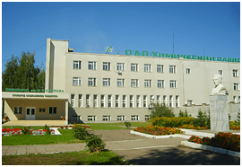

АО «Химический завод им Л.Я.Карпова» основано в 1868 году.
Богатейшая история предприятия хранит в себе яркие страницы созидательного труда многих поколений химиков, выдающихся ученых мирового уровня. Здесь находилась экспериментальная база отечественной и мировой химической науки, в конце XIX века великий русский ученый химик – Д.И. Менделеев работал над получением промышленной партии пироколлодия (бездымного пороха).
В настоящее время предприятие выпускает и реализует химическую продукцию технической квалификации, пищевые добавки и реактивы, фармацевтические субстанции, строительные материалы. Интегрированная система менеджмента предприятия - в области качества продукции, экологии и охраны труда соответствует требованиям международных стандартов серий ISO 9000, ISO 14000, OHSAS 18000.
Программа развития химического завода направлена на модернизацию действующих и создание новых производств, внедрение и освоение прогрессивных технологий.
Удобное географическое положение, наличие развитой инфраструктуры, свободных производственных площадей и мощностей по энергоносителям создают благоприятные условия для привлечения инвестиций в бизнес предприятия.
Стратегия компании – укрепление позиций на химическом рынке России и стран СНГ за счет обеспечения целевых рынков высококачественной продукцией. Предприятие гарантирует стабильность и качество выпускаемой продукции и прилагает максимум усилий для удовлетворения всех требований и ожиданий клиентов.